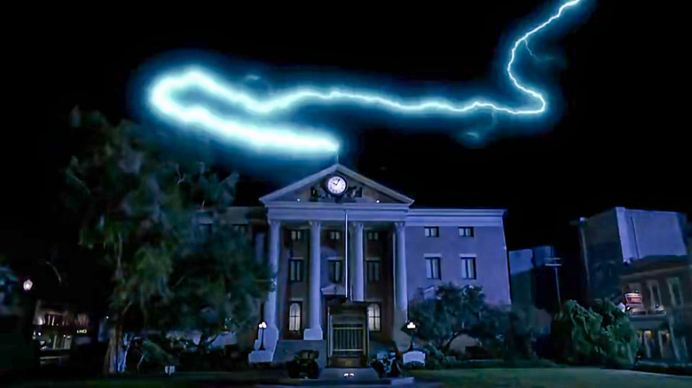

Welcome to Back to the Future Universe
Step into the time-traveling adventure of Marty McFly and Doc Brown! Back to the Future is a legendary sci-fi trilogy that blends action, comedy, and mind-bending time travel. Whether you’re a longtime fan or new to Hill Valley, you’ll find everything you need to know right here!
The Story
In 1985, teenager Marty McFly accidentally travels back to 1955 in a time machine built by the eccentric Dr. Emmett "Doc" Brown. With time running out, Marty must fix history and return home—without altering the future! The journey continues in two epic sequels that take him to 2015, the Wild West of 1885, and back to 1985, proving that where we’re going, we don’t need roads!